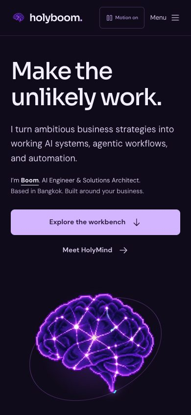
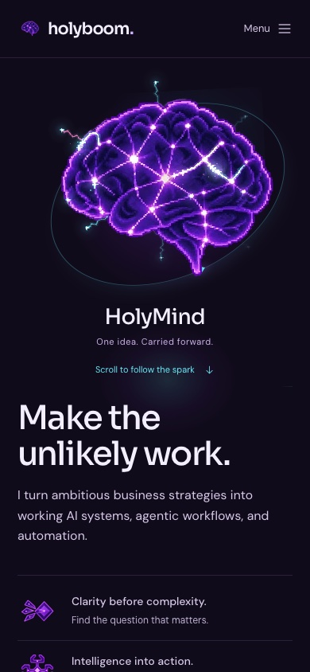
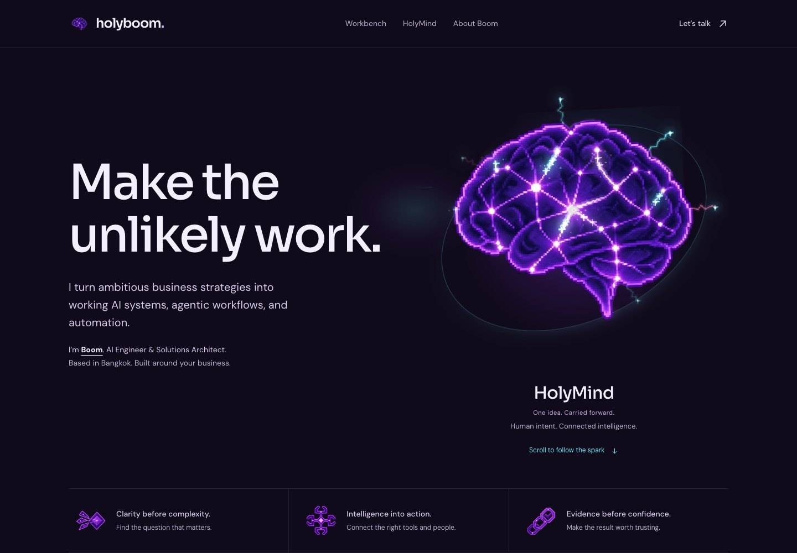
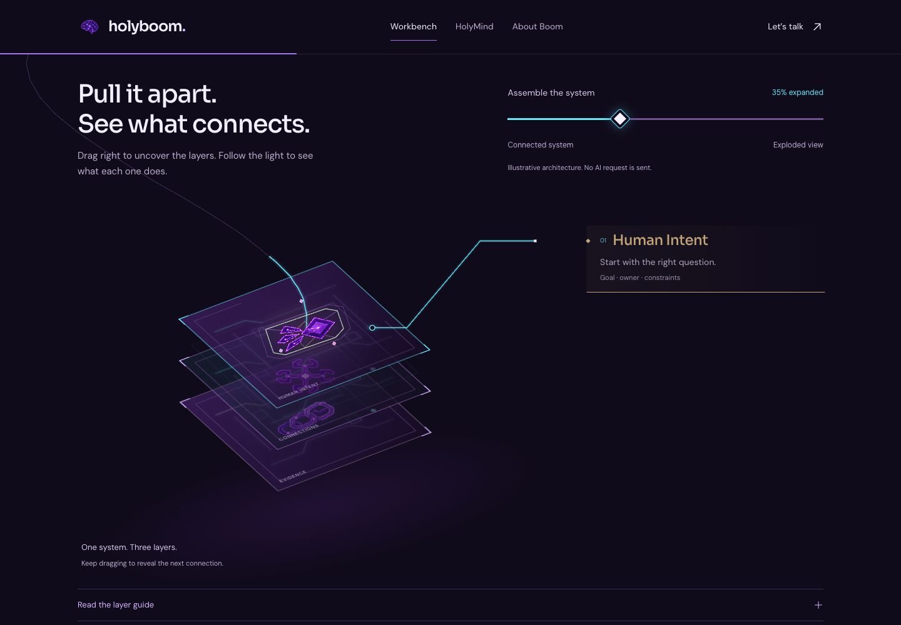
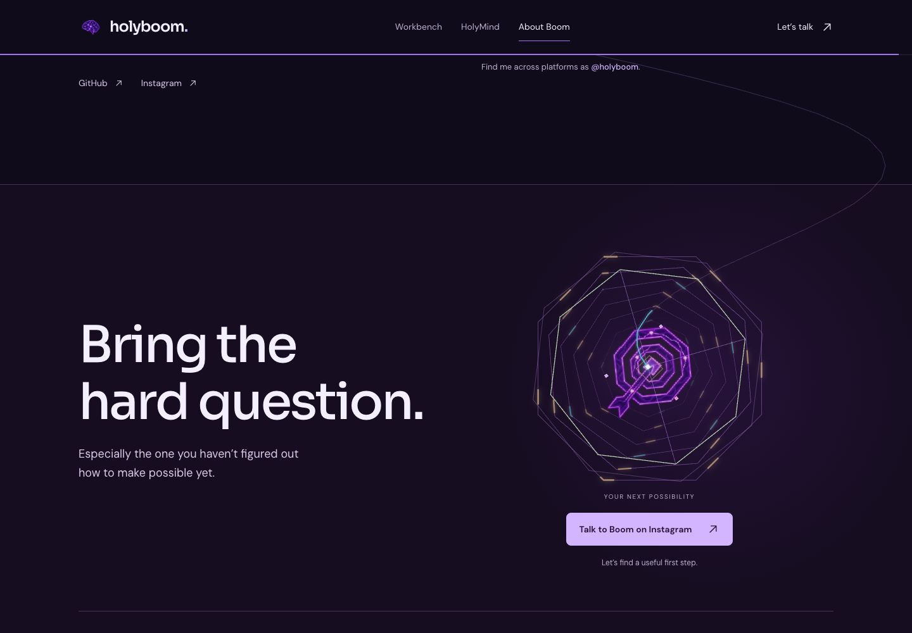

One brain.
The whole page receives its energy.
Spark v8
The brain leads only on phones. The desktop and tablet composition is preserved. Every screen receives stronger source-aligned electricity, edge sparks and shared illuminated handoffs.
The two hero shortcuts and Motion control are removed. Scroll naturally. System Reduce Motion selects a calmer lighting profile automatically.
85 / 85 checks in Chromium
85 / 85 checks in WebKit
85 / 85 checks in WebKit
Verified against the published page. No failed assertions or runtime errors in these runs. Existing assembly and motion suites also passed 47 and 31 checks locally.
The film uses a simulated phone viewport. It is not a physical iPhone or performance benchmark. No independent flash-safety or WCAG certification is claimed.
Phone: artwork before copy


Desktop: original composition, stronger electricity

Light is received, not just carried

